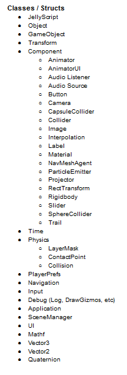
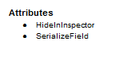
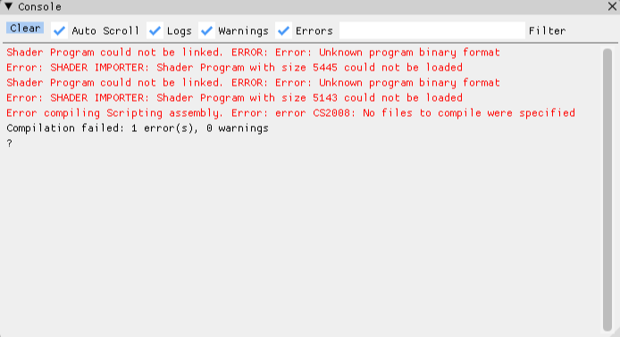
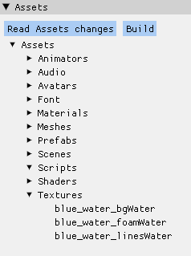

Hi! I'm Jonathan Molina-Prados and I've been one of the eight programmers in this project. Most of the time I have been implementing new engine features, finding and solving bugs, and mostly expanding our C# environment with more functionality.
SCRIPTING SYSTEM IN C#
I have based this technology in a very simple idea: The most we try to mimic Unity behaviors, the better. Our team has a lot of experience working with Unity and C#, and programming a similar system will let us feel comfortable and familiar during the game programming, and we can evade a lot of problems taking the solutions Unity has arrived to without losing so much time thinking about them.
Below you can see our general C# structure, our integrated classes, structs and attributes:


We have integrated Mono, and our system supports HotReloading to not be closing the engine each time we modify a script.
We have GameObjects, LayerMasks, Vector3, all the public C# types and all your custom structs serializable, being editable through the inspector
ENGINE FEATURES
Console
I have expanded the console we had at the beginning of the project, in order to add three diferent categories with their own colors, and a filter to search by key words

Virtual FileSystem
I remade the old filesystem we had in the engine and implemented a new one that stores a virtual copy of the Assets state in memory, and checked periodically for modifications.
Later, due to the huge amount of assets we had, the process became too much laggy and we ended up moving the checks functionality into a button to update the assets state. I tried to move this functionality into a parallel thread, but we had a lot of problems in release mode and actually no time. As an advice, I would implement a sort of Time Slicing in the process and make the checks take place into different frames.

Build Systems
We have organized the development into two different repositories, one to the engine and another one to the game itself, being periodically updated with new engine versions.
The engine one has Appveyor integrated, and checks for failed commits sending notifications to the authors. It also let us make automatic engine builds by just commiting into the releases branch.
For the game releases I have implemented a Build button (with Julià Mauri), as you can see in the image above. We decided to not make use of Appveyor here because we need to make frequent builds for testing, and Appveyor would require that we wait for the build process and download the final build after that. Thats too slow.
Prefabs
Our prefab system is very simple, it acts as a GameObject tree container, and when you instantiate it, a new tree is created and added into the hierarchy taking the prefab ones as templates.
I have tried to implement more interesting functionalities like Apply and Revert, but we ended up without enough time to implement this, and the prefabs caused a lot of bugs with the public script references and the scripting hotreloading.
Different Visual Studio Configurations
I setted up two new visual studio configurations (Debug and Release) for the GameMode, in order to be able of debugging game releases with visual studio.
Binary Serialization and Scene Resources
I implemented, with Guillem Costa, a variation of my last term engine binary serialization. Later, I ended up threating the Scenes as normal resources, in order to implement a new system for loading/unloading scenes and link all this processes with C#.
Custom Cursor Texture
I implemented the possibility of choosing a custom cursor texture in our engine, and change the visuals through scripting too. It also lets you change the square size of the mouse area.
Installer
Guillermo García Subirana and me did a great research about building installers, and the process ended up being very simple with the Visual Studio SetUp projects plugin. It also installs for you all the C++ dependencies in case you have not them installed.
Hunt debug dlls
At some time of the development we discovered that people could not play our game if they have not installed a debugger program like Visual Studio in the system.
After a lot of time researching, I ended up discovering a program called Dependency Walker, and found that we have the assimp dll compiled in debug. And in the process i have learnt a lot about libraries compilation.
Resource Audio Bank
I integrated the wwise audio banks into our resources system workflow, and in the process I fixed a lot of hidden audio bugs.
QA and Small Additions
During the development I've been testing a lot our internal processes and events management, and fixing tons of bugs.
I have also implemented the functionality of disabling colliders, and the .exe icon.
GAME FEATURES
I have implemented the Pause Menu functionality and the Main Menu audio.